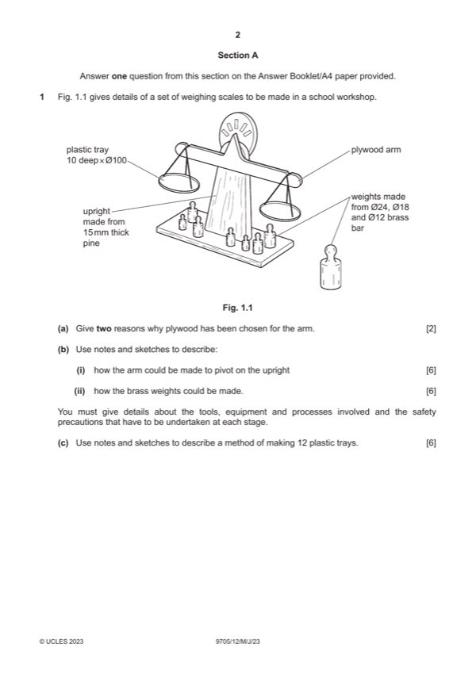

Question 1

Original paper page 2
Part 1(a) — solution
Exemplar answers: 2 AOVR include:
A stable material [1] easy to cut to shape
No weakness across the grain [1] accepts a finish
Mark points
- Include the ideas shown in the solution above.
Part 1(b)(i) — solution
Sketches and/or notes show: 6
Method of joining the arm to the upright
Suitable method (e.g. nut and bolt) and explanation of method [0–3]
Tools, equipment or processes [0–2]
Safety precaution [0–1]
Mark points
- Include the ideas shown in the solution above.
Part 1(b)(ii) — solution
Method of making the weights 6
Suitable method (e.g. turning on a lathe, casting) and explanation of method [0–3]
Tools, equipment or processes [0–2]
Safety precaution [0–1]
Mark points
- Include the ideas shown in the solution above.
Part 1(c) — solution
Sketches and/or notes show: 6
Method of making 12 plastic trays, suitable method (e.g. vacuum forming, laser
cutter...) [0–3]
Explanation of method [0–3]
2023 Page 4 of 15
9705/12 Cambridge International AS & A Level – Mark Scheme May/June 2023
Guidance
Mark points
- Include the ideas shown in the solution above.